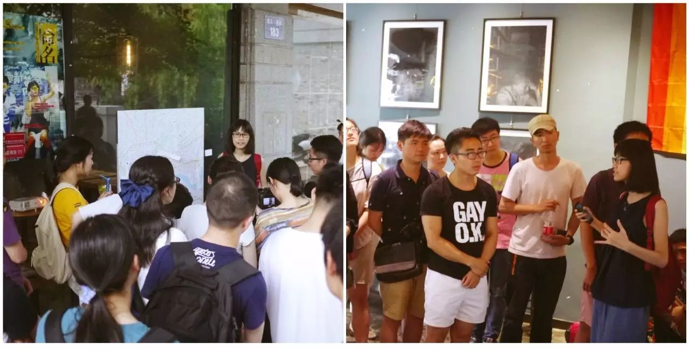

酷儿论坛又双叒叕在招新了你怎么还不来
论坛工作部门分为六个小组，每个小组的工作重心各有侧重，但缺一不可。只要你是愿意加入我们，在推动学生LGBT平权事业上与我们一路同行的靠谱小伙伴，就是我们所期待的你！
想和我们一起愉快地玩耍？看看哪个小组才是你的真爱呢。

/ 倡导组 /
【倡导组的产生——搞事情】
论坛成立之初本没有倡导组，往往都是着重于内部的社群建设。但在“人人都想搞大新闻”的时代大背景下，2016年2月，论坛成立了倡导组。
【倡导组的目标——向公众发声】
志愿者们通过举办讲座、涂鸦等各类活动向公众发声；从教科书项目、教师游说项目入手推进友好校园环境建设，倡导多元性别和平等理念，营造更为平等、多元、开放、包容的校园文化乃至社会环境。培育有志青年参与同志公益活动。
【倡导组的业绩——活动满满】
一、2017.3.31跨性别现身日当天，瓜瓜和小伙伴们在浙江的三所高（浙江师范大学、杭州师范大学、浙江大学）开展了街头倡导与观影等活动。


· 精心布置了场地并征集了大家的支持签名
· 向同学们发放资料并介绍跨性别知识
二、2017.4.9正值浙大120周年校庆之际的集体婚礼，搞事小分队当然不能错过这一波蹭热点的机会。在祝福这些新人们的同时，我们也在展望，什么时候浙大的集体婚礼也能有我们的一席之地，什么时候浙大的集体婚礼也能接受同性伴侣，甚至是多元成家伴侣的报名申请呢？
三、2017.4.22以华科恐同事件为起因的反歧视倡导活动。——拉拉占领篮球场

四、2017.5.20-21“命名：是谁在书写与定义同志？”展览会。

· 到底是谁在书写与定义同志，我们想用一场展览来探讨这个问题
五、2017.6.10这个夏天最最最最最最彩虹的画——酷儿涂鸦

· 在工商与杭师边上的学林支路，顺！利！完！成！啦！
当然还有更多精彩的活动等着你来参与！！！
【加入倡导组我会获得什么？】
首先你会接触并认识一大堆同志公益圈的圈内人（网红啊什么的），培养自己的多元性别意识，开阔视野；你还有机会获得宝贵的培训机会（我才不会告诉你
最重要的是你将获得行动中的快感！
【我想加入倡导组！】
如果你有基本的性/别意识，或者愿意接触学习多元性别理论的
有较强的行动力并且愿意花一定时间的
擅长策划
自我感觉良好 自我保护意识较强
不怕出柜的（当然我们也欢迎友同直人~）
有较强行动力的
有较强行动力的
有较强行动力的
并且真的想为杭州高校同志群体做一些不一样的事情的话
那就加入倡导组吧！

/ 行政组 /
【行政组在做什么】
行政組的日常就是辅助大家的工作，安排和通知每周的例会，内设财务以及人力部门。
【为什么你一定要加入行政组！】
行政吧是一个很枯燥的事情 但不代表是一个很枯燥的部门~ 虽然自身没有什么很大的活动产出 但是是最靠谱的别组活动机动队和坚实的后盾与其余组同进退 行政嘛 是一个一直在跟人打交道的部门~很好的能锻炼你与人处事的能力 让你多多了解团队中和你有交集的每个人发现大家的可爱之处 也许你是一个活动家 也是一个玩咖 但这并不是一个你不选行政部的理由 相反那种积极参与的态度 是我们每个组别最大的战力 。而且不觉得行政听起来是最cool的嘛✧ʕ̢̣̣̣̣̩̩̩̩·͡˔·ོɁ̡̣̣̣̣̩̩̩̩✧。

/ 文化组 /
【文化组在做什么】
文化组负责周常活动的组织（冒刺桌游、冒刺影院等）并与其他小组或联合其他组织一起参与大型活动的筹备。在过去的一年中，我们联合筹办了《阴道说》剧本朗读会的杭州站，《展览︱命名：是谁在书写与定义同志》等一些列活动，取得了很好的反响。
周常活动是酷儿论坛重要的收入来源之一，联合其他组织的大型活动也充满乐趣。加入文化组，你将能够亲自参与组织活动，与大家一起共度难忘的时光。
【我们欢迎这样的你】
有一定的组织活动能力或经验，愿意参与周常活动的组织和大型活动的筹备工作。
对桌游有些了解（组织桌游活动）、对电影有些研究（挑选并组织电影讨论）、对一本书有独到的见解（组织读书会）或者对音乐有特别的爱好（组织音乐节）等等，都欢迎来到文化发挥自己的优势。

/ 健康组 /
【健康组在做什么】
一、举办各类性别、疾病相关讲座。
过去的一年中，我们于2016年12月举办了吴么西杭州专场讲座，在杭州的三场高校分享性教育的理念。
二、组织各类趣味活动，提高社群对艾滋病话题的了解程度。
通过防艾宣传品创意征集大赛等活动实现浸入式的科普教育与意识提升。
三、与疾控中心合作，进行艾滋流动唾液检测和问卷调查，制作高校防艾宣传视频。
【加入健康组，你能收获】
对艾滋病等疾病最新资讯、研究成果的了解
对社群中艾滋病感染者与携带者的关怀与帮助
为消除恐艾情绪进而实现内部平权而努力的成就感
为学生群体中艾滋检测与防治工作的贡献
【我们需要这样的你】
对性教育、防艾等议题感兴趣
有较强的责任意识和关怀精神

/ 媒体组 /
【媒体组在做什么】
媒体组负责宣传平台运营，主要是论坛日常维护工作、微博/微信/QQ宣传平台的内容更新与日常维护，品牌推广和社群运营。
一、微信有论坛的吉祥物（？）AI苦瓜君瓜瓜的后台运营，微信公众号的后台运营（编辑排版、回复留言等工作），推送原创内容的产出。文艺一点说，我们的工作就是记录论坛小伙伴们一起生活的点点滴滴呀~
原创内容可以是性/别方面相关的任何东西。
在节日的时候会推送相关的内容，如：03.01 | 世界艾滋病零歧视日
和性/别相关的文章翻译，如：同声传译 | 孤独患者——男同性恋的孤独症疫情
和性/别相关的电影，如：电影推荐 | 橘色 Tangerine

性/别相关的翻译，如：性别姜饼人v3.3的翻译与美工

二、微博主要同步微信的推送，同时可以转发一些别的组织的内容。同时微博君也可以远程工作，所以非常欢迎其他地区的小伙伴加入管理哦~
【在媒体组，你收获了什么？】
文文：在媒体组工作了一年，从一开始的翻译到后来写一些推荐、科普文章，最大的收获是性/别的基础知识，对很多事能够以性/别的视角去看待，在写文章的过程中也对零散的知识进行了很好的整理。最重要的一点是，你做的这些事情你看得到改变，至少会有一个记录，感觉很有收获，自己的付出得到了肯定那种满足感。
还有的收获就是专业技能的提升啦，加入媒体组之前真的是一个完全小白，现在微信推文的排版编辑都轻松掌握啦，也能进行一些简单的文章的书写。（做翻译对英语水平的提升真的很有帮助2333）而且你也可以把自己平时很难找到同好的东西发出来（嗯我就是这么做的虽然很少有人看qvq）
艹姐姐：“亲爱的文案你写了吗？” “插图你做了吗？”“版你排了吗？”“要过12点了！你怎么还没推？”“浪蛙你在哪？（手动微笑）”……在这里不仅能接触各种科普和羞羞的活动资讯，还可以提早适应新媒体大坑，为以后实习／工作的加班生活做好充分的身理／心理准备。
【我们期待这样的你】
具备一定的相关专业技能，如摄影、PS、视频剪辑制作等（这里的加粗看到了吗！！有技能的朋友不要犹豫了赶紧来报名！）
如果你有线上平台的运营经验会很加分
当然你有原创内容的产出能力也十分欢迎

/ 特别招募 /
我们正在寻找一位负责论坛财务的小伙伴！
以及！
你可能在上面没看到所以在这里再强调一次的有设计相关技能的朋友！
如果你有着财务/金融/会计或者设计的相关专业背景及知识，欢迎你加入我们，成为论坛的财务担当～

【关于你】
无论在哪个小组，我们都希望你
1、 对性少数群体友好，有一颗多元和包容的心；
2、 有一定的性/性别、性取向相关知识；
3、 对同志公益有热心，有平等权益的意识，认同我们的愿景；
4、 有较强的责任心，能够承受工作压力；
5、 有一定的合作能力，能够配合他人工作；
6、 和大家成为朋友；
7、 勇于挑战，乐于学习和尝试（这里的工作对很多人都是未知领域）；
8、 主要居住在杭州（除非是只在线上工作的职位）；
我们不限定你的性别、性取向、职业、年龄等个人身份；
如果你有心理学、社会学、管理学、法学的专业背景，或是网站运营、传媒、NGO的职业经历，会加分很多哦~
同时，论坛能带给你
1、 结识一群朋友，获得一段美好的回忆；
2、 参与同志公益，为性少数群体服务、发声；
3、 获得志愿者培训，了解民间NGO的工作方式；
4、 提高工作能力，积累不同的工作经验，提升个人素养；
5、 充实业余生活；
扫描下方的二维码或点击“阅读原文”即可填写报名表

报名表